十、伏安法和极谱法 答案
一、选择题 ( 共138题 )
1. 2 分 (1111) (3) 2. 2 分 (1112) (2) 3. 1 分 (1118) (1)
4. 2 分 (1119) (2) 5. 1 分 (1120) (2) 6. 2 分 (1121) (4)
7. 2 分 (1128) (3) 8. 2 分 (1132) (3) 9. 2 分 (1142) (4)
10. 2 分 (1145) (2) 11. 2 分 (1150) (2) 12. 2 分 (1151) (2)
13. 1 分 (1152) (3) 14. 2 分 (1153) (2) 15. 2 分 (1154) (3)
16. 2 分 (1160) (4) 17. 2 分 (1161) (4) 18. 2 分 (1162) (2)
19. 2 分 (1163) (2) 20. 2 分 (1164) (2) 21. 2 分 (1168) (4)
22. 1 分 (1169) (1) 23. 2 分 (1170) (3) 24. 2 分 (1201) (1)
25. 2 分 (1202) (4) 26. 2 分 (1203) (1) 27. 2 分 (1204) (3)
28. 2 分 (1208) (3) 29. 2 分 (1209) (4) 30. 2 分 (1210) (1)
31. 2 分 (1492) (4) 32. 2 分 (1493) (4) 33. 2 分 (1494) (3)
34. 2 分 (1495) (2) 35. 2 分 (1496) (1) 36. 2 分 (1497) (3)
37. 2 分 (1498) (4) 38. 2 分 (1499) (3) 39. 2 分 (1501) (3)
40. 2 分 (1502) (2) 41. 2 分 (1503) (2) 42. 2 分 (1504) (1)
43. 2 分 (1505) (3) 44. 2 分 (1506) (2) 45. 2 分 (1507) (3)
46. 2 分 (1508) (3) 47. 2 分 (1509) (4) 48. 2 分 (1510) (2)
49. 2 分 (1511) (1) 50. 2 分 (1512) (2) 51. 2 分 (1513) (2)
52. 1 分 (1514) (1) 53. 1 分 (1515) (1) 54. 2 分 (1516) (2)
55. 1 分 (1517) (1) 56. 1 分 (1518) (3) 57. 2 分 (1519) (1)
58. 2 分 (1520) (3) 59. 2 分 (1521) (4) 60. 2 分 (1522) (4)
61. 2 分 (1523) (2) 62. 2 分 (1524) (1) 63. 2 分 (1525) (1)
64. 2 分 (1527) (3) 65. 2 分 (1528) (3) 66. 2 分 (1529) (3)
67. 2 分 (1530) (3) 68. 2 分 (1531) (3) 69. 2 分 (1532) (2)
70. 2 分 (1533) (1) 71. 2 分 (1534) (4) 72. 2 分 (1535) (1)
73. 2 分 (1536) (1) 74. 1 分 (1537) (2) 75. 1 分 (1538) (4)
76. 1 分 (1539) (1) 77. 1 分 (1540) (2) 78. 2 分 (1541) (2)
79. 2 分 (1542) (2) 80. 2 分 (1543) (1) 81. 2 分 (1544) (2)
82. 2 分 (1545) (2) 83. 2 分 (1546) (3) 84. 2 分 (1547) (3)
85. 2 分 (1573) (1) 86. 2 分 (1574) (2) 87. 2 分 (1575) (1)
88. 2 分 (1576) (3) 89. 2 分 (1577) (1) 90. 2 分 (1578) (3)
91. 2 分 (1579) (2) 92. 2 分 (1580) (4) 93. 2 分 (1581) (4)
94. 2 分 (1582) (1) 95. 1 分 (1583) (4) 96. 2 分 (1584) (3)
97. 2 分 (1585) (4) 98. 2 分 (1586) (2) 99. 2 分 (1587) (1)
100. 2 分 (1588) (1) 101. 2 分 (1590) (4) 102. 2 分 (1591) (3)
103. 2 分 (1592) (1) 104. 2 分 (1593) (4) 105. 2 分 (1594) (1)
106. 1 分 (1595) (4) 107. 1 分 (1596) (3) 108. 2 分 (1597) (1)
109. 2 分 (1598) (1) 110. 2 分 (1599) (3) 111. 2 分 (1600) (4)
112. 2 分 (1601) (2) 113. 1 分 (1602) (3) 114. 2 分 (1603) (2)
115. 2 分 (1604) (3) 116. 2 分 (1605) (1) 117. 2 分 (1606) (3)
118. 2 分 (1706) (2) 119. 2 分 (1707) (4) 120. 1 分 (1921) (1)
121. 1 分 (1922) (2) 122. 1 分 (1923) (2) 123. 1 分 (1924) (1)
124. 1 分 (1925) (1) 125. 1 分 (1926) (4) 126. 1 分 (1927) (4)
127. 1 分 (1928) (4) 128. 1 分 (1929) (4) 129. 2 分 (1930) (2)
130. 1 分 (1931) (3) 131. 2 分 (1959) (1) 132. 2 分 (1960) (1)
133. 2 分 (1961) (4) 134. 1 分 (1962) (2) 135. 2 分 (1963) (3)
136. 2 分 (1964) (4) 137. 2 分 (1965) (3) 138. 2 分 (1966) (1)
二、填空题 ( 共100 题 )
1. 2 分 (1526)
[答] (4)
2. 2 分 (2032)
[答] 还原；氧化。
3. 2 分 (2033)
[答] 盐桥；消除或降低液接电位。
4. 5 分 (2036)
[答] 连续变化的工作电极电位 E�蓿凰� E 变化的电解电流i；
E = E 1/2+ (RT/nF)ln[(id-i)/i]
恒定的电流 i；随时间 t 变化的工作电极电位
RT t 1/2 - t1/2
E = E t/4 + ── ln ─────
nF t1/2
5. 5 分 (2037)
[答] 扩散作用；电极反应；化学（离解）反应。
6. 5 分 (2038)
[答] (1) 电积（富集），控制电极电位电解； Cd��+ 2e-+ Hg → Cd(Hg)，阴极。
(2) 溶出；极谱法氧化波；Cd(Hg) → Cd2+ + 2e-+ Hg ；阳极。
7. 2 分 (2040)
[答] 正；还原；负；氧化。
8. 2 分 (2060)
[答] 还原波。
9. 2 分 (2061)
[答] 半波电位。
10. 2 分 (2062)
[答] 扩散
11. 2 分 (2066)
[答]如图： 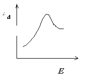
12. 2 分 (2072)
[答] 极化电极
13. 2 分 (2074)
[答] Cl-
14. 2 分 (2085)
[答] 定性分析
15. 2 分 (2090)
[答] 扩散
16. 5 分 (2402)
[答] 不断更新; 重现性好; 超电位很高；氢还原
17. 5 分 (2403)
[答] 工作电极；极化电极；参比电极；去极化电极
18. 2 分 (2404)
[答] 杂质的还原； 滴汞的充电电流； 扣除底电流
19. 5 分 (2405)
[答] 扩散；支持电解质；扣除底电流；表面活性剂
20. 2 分 (2406)
[答] 汞柱高平方根；汞柱高平方根
21. 2 分 (2407)
[答] 表面积小；要低；不能
22. 2 分 (2408)
[答] m2/3 t1/6��
除n以外的其它各项, 但主要是D
D(与溶液的粘度有关)
23. 2 分 (2409)
[答] 标准加入
24. 5 分 (2410)
[答] 很快；扩散速度；较慢；极限扩散
25. 2 分 (2411)
[答] 稳定常数；配位数；配位剂浓度
26. 5 分 (2412)
[答] 线性扫描电压；较快；平滑峰状；锯齿平台波
27. 5 分 (2413)
[答] 快；高；低；小
28. 2 分 (2414)
[答] 电极反应的产物发生了氧化还原；有关电极反应
29. 5 分 (2415)
[答] 交流电压；峰形；正弦与方波交流电压；电容电流；高
30. 5 分 (2416)
[答] 后期, 毛细管噪音的影响, 低, 高
31. 2 分 (2417)
[答] 不能；氧化Ｒ；较大
32. 2 分 (2418)
[答] Ｈ+；减低氢的超电位；正
33. 2 分 (2419)
[答] 离子或中性分子
强烈地吸附
金属或配位体
电极表面的浓度大于溶液本体中的浓度
34. 2 分 (2420)
[答] 吸附在电极上；键合的氢；质子给予体
35. 2 分 (2421)
[答] 通H2或Ｎ2；加入Na2SO3
36. 5 分 (2422)
[答] 10-5mol/L；正或负；方波极谱；脉冲极谱
37. 2 分 (2423)
[答] 汞滴的表面积接近不变；由平滑的曲线组成的峰形
38. 2 分 (2424)
[答] 电极表面与主体溶液之间的浓度差别引起的电极电位偏离平衡电位值的现象；
极谱分析；电解分析
39. 5 分 (2425)
[答] 支持电解质, 消除迁移电流；
极大抑制剂, 消除极大；除氧
40. 2 分 (2426)
[答] 氢；铂还原沉积在滴汞电极表面, 降低氢的超电位；铂
41. 2 分 (2446)
[答] 太快会扰动溶液, 产生对流传质；扩散过程
42. 2 分 (2447)
[答] 充电电流或电容电流；试剂中杂质的电解电流
43. 2 分 (2448)
[答] 电极反应电子数
44. 2 分 (2449)
[答] 扩散速度；电极反应速度；扩散速度
45. 2 分 (2450)
[答] 半波电位；极限扩散电流
46. 2 分 (2451)
[答] 氮(或氢)；CO2(或加入碳酸盐)；无水亚硫酸钠
47. 2 分 (2452)
[答] lg(i／(id－i))－E d.e； D E 1/2－lgc(配体)
48. 5 分 (2453)
[答] 催化极谱；示差脉冲极谱；交流极谱；方波极谱
49. 5 分 (2454)
[答] 很小；很小；恒定的；以饱和甘汞电极为参比的
50. 2 分 (2455)
[答] d＝607zD1/2m2/3��t1/6��c
51. 2 分 (2456)
[答] (1)支持电解质； (2)极大抑制剂
52. 2 分 (2457)
[答] 汞的表面张力；电极电位；毛细管零电荷电位
53. 2 分 (2458)
[答] 电流--滴汞电极电位；电极电位--滴定体积
54. 2 分 (2459)
[答] h1/2；h0(与汞柱高度无关)；h0
55. 2 分 (2460)
[答] 10-5； 10-6；10-8； 10-9
56. 2 分 (2461)
[答] exp(－t／RC)； t -1/2； 快
57. 2 分 (2462)
[答] 充电； 毛细管噪声
58. 2 分 (2463)
[答] 峰；由于扫描速度快, 扩散层迅速增厚
59. 5 分 (2464)
[答] 极谱极大；表面张力；切向运动；表面活性物质
60. 2 分 (2465)
[答] 迁移；50~100；支持电解质
61. 2 分 (2466)
[答] 多次 (或重复)；指示
62. 2 分 (2467)
[答] K[(Vxcx＋Vscs)／(Vx＋Vs)]
63. 2 分 (2505)
[答] (1) 经典极谱法； (2) 脉冲极谱法
64. 2 分 (2859)
预电解过程； 是为了富集被测痕量组分；溶出过程。
65. 2 分 (2860)
氧化；阳极；还原；阴极。
66. 2 分 (2861)
阳极峰电流ipa、阴极峰电流ipc、阳极峰电位E pa、阴极峰电位E pc。
67. 2 分 (2862)
O2＋2H＋＋2e- H2O2
H2O2＋2H+＋2e- 2H2O
68. 2 分 (2863)
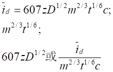
69. 2 分 (2864)
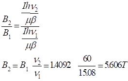
70. 2 分 (2865)
支持电解质；迁移电流；静止；对流电流。
71. 2 分 (2866)
无水Na2SO3；
2SO32－＋O22SO42－
72. 2 分 (2867)
常规、示差；充电电流和毛细管噪声电流。
73. 5 分 (2868)
汞、固体；悬汞和汞膜；碳糊、石墨、玻璃碳和Pt、Ag。
74. 2 分 (2869)
u1/2； u。
75. 2 分 (2870)
电解电流、充电电流、毛细管噪声电流。
76. 2 分 (2939)
防止它的表面发生浓差极化；保持稳定。
77. 2 分 (2940)
无；保持恒定。
78. 2 分 (2941)
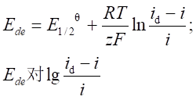
79. 2 分 (2942)
有关；
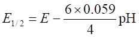
80. 2 分 (2943)
加入较高浓度的配位体；更负。
81. 2 分 (2944)
有关；无关；定性分析。
82. 2 分 (2945)
低（或差）； 3。
83. 2 分 (2946)
相等 ；反应电子数相同。
84. 2 分 (2947)
1：2；
两阶段电极反应电子数比为1：2。
85. 5 分 (2948)
与m2/3t1/6呈正比；与m1/3t1/3呈正比； h1/2呈正比； h无关。
86. 2 分 (2949)
与m2/3t1/6呈正比；与m1/3t1/3呈正比； h1/2呈正比； h无关。
87. 2 分 (2950)
单扫描极谱法；交流极谱法。
88. 5 分 (2951)
提高了信号强度；
降低了噪声水平；
既提高了信号强度又降低了噪声水平。
89. 2 分 (2952)
高；很小。
90. 2 分 (2953)
与电极反应平行的化学反应的反应速度。
91. 2 分 (2954)
较长的；更多的富集。
92. 2 分 (2955)
； 两直线交点对应的体积。
93. 2 分 (2956)
V；两直线交点对应的体积。
94. 2 分 (2957)
0.2； 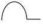
95. 2 分 (2958)
0.2； 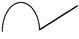
96. 2 分 (4522)
[答] 消除迁移电流, 除O2。
97. 5 分 (4523)
[答] 饱和甘汞电极、Pt对电极、汞滴电极。 Pt对电极，汞滴电极。
98. 2 分 (4525)
[答] 随时间呈线性变化, 恒定, 充电电流.。
99. 2 分 (4526)
[答] 7, 5至7, 消除汞滴面积改变的影响。
100. 2 分 (4527)
[答] Al2O3粉抛光，超声波清洗。
三、计算题 ( 共69 题 )
1. 5 分 (3009)
[答] c= 4 mmol/L , m=1.50 mg/s , t=3.15 s , id=62 24A, D=0.75×10-5 cm/s
根据 id=607zcD1/2m2/3 t1/6��
62 = 607z×4×(1.5) 2/3 (0.75×10-5)1/2(3.15) 1/6��
z = 62/(607×0.0173) = 5.9 ≈ 6
所以 TeO32- 还原成 Te2-��
2. 5 分 (3010)
[答] 由(E1/2 )C - (E 1/2 )s ≈ 0.0592/n lgKC -p×0.0592/z lgcx
(-0.719)-(-0.568) = - 0.0592/2 lgKC - p×0.0592/2 lg(1.00×10-3)
(-0.778)-(-0.586) = - 0.0592/2 lgKC- p×0.0592/2 lg(1.00×10-2)
解得p = 2 , 所以配合物的化学式为 CdX22-��
解得 lgKC= 10.49
KC= 3.11×1010
3. 5 分 (3011)
[答] (1) c = 5.00 mmol/L z=2 t=60/18 = 10/3 s
m = (38.1/10)/(10/3) = 1.143 mg/s id = 50 mA
50 = 607×2×5.00×(1.143)2/3×(10/3)1/6×D1/2
D1/2= 6.17×10-3 ; D= 3.8×10-5 cm2/s
(2) m2= (42.0/10)/3 = 42.0/30 =1.40mg/s t2= 3.00 s
id(2)= (m2/m1)2/3(t2/ t1)1/6×id(1)
= (1.40/1.143) 2/3×[3/(10/3)]1/6×50 = 1.145×0.983×50 = 56.2 mA
4. 10 分 (3012)
[答] t= 4.32 s, m = 196mg/100s = 1.96 mg/s ,
c = 1.00 mmol/L , n = 2 , id = 8.76 mA
8.76 = 607×2×1.00×D1/2×(1.96)2/3×(4.32)1/6��
解得 D1/2 = 0.00361 , D = 1.30×10-5 cm2/s
根据 ��D( E 1/2 )C /Dlgcx = - p×0.05915/z
令 ��D( E 1/2 )C = -0.517 - (-0.547) = 0.030
Dlgcx= lg0.100 - lg0.300 = -1.00 - (-0.523) = - 0.477
解得 p = 2.12 ≈ 2 配合物的组成为 PbA2
5. 10 分 (3017)
[答]��(j1/2 )C =(j1/2 )s-0.0592/ z lg(Ks'/Ks)-0.0592/ z lgK(稳)-0.0592/ z lg[X]p
- 1.60 + 1.02 = - 0.0592/2 lgK(稳) - 0.0592/2 lg[0.1]3
lgK(稳)= 22.59 K(稳) = 3.89×1022
6. 10 分 (3021)
[答] (1) 根据 E = E 1/2 + 0.059/ z lg[(id-i)/i] 可知
- 0.515 = E 1/2 ��+ 0.059/ z lg(10.0 - 2.0)/2.0 ...........①
- 0.539 = E 1/2 + 0.059/ z lg(10.0-4.0)/4.0 ...........②
解联立方程组,得 z = 1 �搌�E 1/2 = - 0.55 V
(2) 已知 , h1= 64 cm , id1 = 10.0 mA h2=81cm
id1/id2= h11/2/h21/2
id2 = id1×(h2/h1)1/2=10.0×9/8 = 11.25mA
7. 5 分 (3025)
[答] 根据题意,标样的波高为 80 - 50 = 30 格 , 若试样浓度为 x ,根据比较法列出
比例式 5x/50 : 50(格) = 1.0×0.5/50 : 30(格)
解之得 x = 0.167 mg/mL 试样中铅的含量为 0.167 mg/mL
8. 5 分 (3031)
[答] h1= K Scx/25
Scx/0.5×2.0×10-3
h2= K ────────────
25
h1 Scx/25 Scx 42
── = ───────── = ───────── = ───
h2 Scx+1.0×10-3/25 Scx + 1.0×10-3 65
解得 : c(Cu2+) = 3.65 × 10-4 mol/L
9. 5 分 (3033)
[答] H = Kc , 63 = Kcx
cx×10+0.001×1
67.2 = K ──────────
11
63 11cx
── = ───────
672 10cx+ 0.01
cx = 5.77×10-4 moL・L-1
6.3 = Kcx
10cx + 0.001×1
34.6 = K ───────────
11
6.3 11cx
── = ───────
34.6 10cx+0.001
cx = 1.98 × 10-5 mol/L
( 5.77×10-4 - 1.98×10-5 ) ×0.01×63.5
────────────────────── = 0.142 mg/g
2.50
这种树脂对 Cu (Ⅱ) 的交换能力为 0.142 mg/g。
10. 10 分 (3039)
[答] 据id = 607zD1/2m2/3 t1/6 c
= 13.4 (mA) = 13.4×10-6 A
电解 1 h 析出 Pb量
据: m = MPb / zF ・id・t = 5.17×10-5 g
5.17×10-5 1000
减少 [Pb2+] = ────── × ──── = 1.25×10-5 mol/L
207.2 20.00
1.25×10-5
─────── ×100% = 0.5%
2.50×10-3
剩余 [Pb2+] = 2.50×10-3 - 1.25×10-5 ≈ 2.49×10-3 mol/L
说明：虽然极谱电解时间相当长，但实际消耗量是很小的，所以同一试液可多次进行分析，其结果不变。分析再现性好。
11. 5 分 (3040)
[答] E = E1/2 + RT/zF ln[(id-i)/I]
dE�� RT id RT 1 1
微分：── = - ── [ ──── ] = - ─── [ ─ + ─── ]
di zF i(id-i) zF i id-i
d2E RT id(id-2i)
─── = ── ・───────
di2 zF i2(id-i)2
d2E
当 ─── = 0 的条件是 ( id - 2i ) = 0 i = id/2
di2
i = id/2 时正是极谱波的半波电位处，而��j1/2就是极谱波的转折点。
12. 10 分 (3050)
[答] IO3-+ 6H+ + 6e- = I- + 3H2O
0.059 [IO3-][H+]6
��Ede=��EqIO3-,I-+ ──── lg ───────
6 [I-]
当 [IO3-] = [I-]时，Ede 即为 E1/2，则
当 pH = 5 时
��E1/2 = 1.08 - 0.059×5 = + 0.78 V (vs SCE )
��E1/2 = 0.78 - 0.24 = + 0.54 V (vs SCE)
可逆波的 E1/2 应为 +0.54 V (vs SCE) , 今极谱波的 E1/2 为 -0.50 V (vs SCE),
故为不可逆波。
13. 5 分 (3051)
[答] 试液波高： hx = 50
标液波高： hs = 80 - 50 = 30
试液中铅含量：
hx 50
cx = cs・─── = 0.50 × ─── = 0.833 mg/50 mL
hs 30
试样中铅含量：
0.833×1000
────── = 0.167 g/L
5×1000
14. 5 分 (3052)
[答]id = k・n・c
铅极谱波： 30 = k・2・1.00×10-3 (1)
铟极谱波： 45 = k・3・c (2)
解式 (1) (2)
c = 1.00×10-3 mol/L
15. 5 分 (3063)
[答] 20 = 3.50×1.20×c
c = 4.76 mmol/L
1
4.76×183.32×── = 0.87 g
1000
即取试样量最多不能大于 0.87 g。
16. 5 分 (3324)
[答] w(Cd)＝〔(42.5／0.145)×(25／5)／(0.2×106)〕×100％＝0.773％
17. 5 分 (3327)
[答] 2.3＝607×2×(2.65×10-5)1/2×1.85×c
c＝0.20mmol/L
18. 5 分 (3329)
[答] 4.92＝607×2×D×1.46×4.29
D＝6.10×10 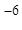
19. 5 分 (3330)
[答] 0.271＝607×3×D1/2×1.03�尽�6.67�健�5×10-2
D＝4.52×10-6cm2/s
20. 5 分 (3331)
[答] 5.8＝607×n×(2.6×10-5)1/2×1.85�尽�4.09�健�0.25
n＝3.93 » 4
O2还原到H2Ｏ
21. 10 分 (3332)
[答] 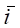 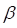
d2∝h1/2; d2／6.20＝（40／30）1/2; d2＝7.16mＡ
22. 10 分 (3333)
[答] i＝i0exp(－t／RC)
exp(－t／RC)＝exp[－40×10-3／(103×20×10-6×3×10-2)]＝exp(－67)＝10-29
电流值为原来的10-29
23. 5 分 (3334)
[答] 0.271＝607・n(4×10-6)1/2×1.03�尽�6.67�健�5×10-2
z＝3.17 » 3
铟还原到0价, 生成铟汞齐
24. 10 分 (3335)
[答] ip／0.250＝（6／5）2/3��, ip(t=6)＝1.13×0.250＝0.2825mA
同理:ip(t=3)＝0.1775mA , ip(t=2)＝0.1353mA
��Dip／Dt(t=2)＝0.0422 , ��Dip／Dt(t=5)＝0.0325
时间越长, 电流变化越小, 主要是滴汞面积变化小, 所以单扫极谱在后期扫描
25. 10 分 (3336)
[答] Q＝CV iC＝dQ／dt＝Vdc／dt＋CdV／dt » CdV／dt
iC＝0.3×10-6×0.20＝6×10-8A＝6×10-2mA
ip＝iC＝2344×23/2×(8×10-6)1/2×0.21/2×1.52/3×52/3×c
6×10-2＝32.1c, c＝1.9×10-3mmol/L
26. 10 分 (3337)
[答] ip＝2344×23/2×(8.0×10-6)1/2×0.21/2×1.5�尽�5�尽�c
＝32.1c
d＝607×2×(8.0×10-6)1/2×1.5�尽�5�健�c＝5.940c
p／ d＝32.1c／5.94c＝5.4
27. 10 分 (3394)
[答] 扩散电流常数i=607zD��, 由于Pb2+, Cd2+的电极反应电子转移
数相同, 因此两者i的比, 实质上是扩散系数之比值.
d(Pb) K(Pb)c(Pb) 0.97×c(Pb)×(25/30)×(250/1000)
──── = ───── 1.76= ─────────────────
d(Cd) K(Cd)c(Cd) 9.68×10-3×(5/30)
c(Pb) =8.78×10-4mol/L
8.78×10-4×207
w(Pb) = ───────── = 0.0192
9.44
28. 5 分 (3395)
[答] 根据极谱波方程
0.059 (d)C -��C
Ede =E1/2 + ─── lg───────
z C
0.059 6.00 -1.50
-0.612 =��E1/2 + ─── lg───────
2 1.50
��E1/2 =-0.626 V
29. 5 分 (3396)
[答]id(Pb) = I (Pb) m3/2 t1/6 c(Pb)
id(Cd) = I (Cd) m3/2 t1/6 c(Cd)
id(Pb) I (Pb) c(Pb)
──── = ───・────
id(Cd) I(Cd) c(Cd)
4.40 1 c(Pb)
──── = ───・─── c(Pb) =9.18×10-4mol/L
6,20 0.924 1.4×10-3
30. 10 分 (3397)
[答] 由极谱波方程式(在25℃时)
0.059 i
Ede =E1/2 - ──── lg────
z id -i
0.059 i
Ede = - ──── (��lg───)
z id -i
取已知数据中的任意两组数据, 得
-0.422-(-0.406) =-(0.059/z)[0.17-(-0.37)] z=1.99≈2.
由lg[i/(id-i)]～Ede 关系求斜率S=0.016/0.54 =0.030
以上数据与二电子电极反应的理论斜率0.029比较, 可以判断电极反应可逆.
31. 5 分 (3398)
[答] 根据配合物极谱波方程式半波电位, 配位数间的关系:
DE 0.059
──── =- ─── p
Dlg[L] z
-0.764-(-0.681) 0.059
───────── =-─── p, p =2.8≈3
lg1 -1g0.1 2
所以该配合物的化学式为 Pb(OH)3-.
32. 5 分 (3399)
[答] it
lg ── = - kt= - 2.0×10-4×120 = - 2.4×10-2
i0
it
1 - ── = 1 - 0.946 = 0.054
i0
33. 5 分 (3400)
[答] 试样波高 =58.9 -12.4 =46.5μA
标样波高 =81.5 -58.9 =22.6μA
根据 id=Kc式
id(x) cx 10/50 46.5×1.7×10-3
─── = ───・───, cx = ──────────
id(s) cs 5/50 22.6×2
=1.75×10-3mol/L
cx =1.75×10-3×207.2×1000
=362.6mg/L
34. 5 分 (3401)
[答]根据 id =Kc, K =id/c
由标准溶液测得的波高求K 19.3/150; 45.0/350; 64.3/500, 计算得到K的平均值为0.129(mm/μg)
计算试样中Cd的质量分数
41.7
w(Cd) = ─────────── =0.0016
0.129×0.2×106
35. 10 分 (3402)
[答]根据标准加入法计算式
csVshx
cx = ─────────
H(Vx+Vs) -hVx
已知:cs =6.0×10-3mol/L; Vs=5.0mL
H =28.3mA hx=24.9mA
Vx=25.0mL
6.0×10-3×5×24.9
cx = ─────────── =3.30×10-3mol/L
28.3×30 -24.9×25
w(Sn) =3.3×10-3×(250/1000)×118.69/3.00 =0.0326
36. 5 分 (3403)
[答] d =607zD1/2m2/3 t1/6 c
��d
D1/2 = ────────
607zD1/2m2/3 t1/6 c
43.50
= ──────────
607×2×1.87×5.0
D1/2 =3.83×10-3
D =1.47×10-5cm2/s
37. 5 分 (3404)
[答] 根据 ��d =KP1/2��
d，1 P1
──── =(───) 1/2
d，2 P2
39.3
d，2 = ──────
(40/60)��
=48.1mA
38. 2 分 (3592)
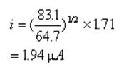
39. 5 分 (3593)
由尤考维奇方程求出电子得失数：
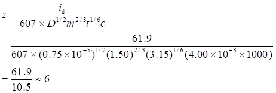
还原至－2价。
40. 10 分 (3594)
（1）由尤考维奇方程得：
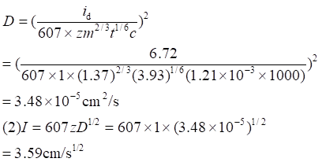
41. 5 分 (3595)
假定：
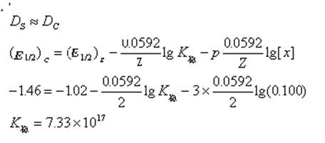
42. 10 分 (3596)
（1）求出m=(3.82×10－2×103×18)/(10×60)=1.15mg/s
t=60/18=3.33s
由尤考维奇方程求出扩散系数D：
43. 10 分 (3597)
（1）由尤考维奇方程得：
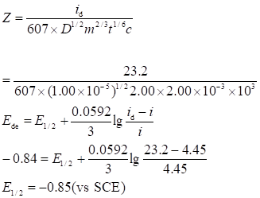
44. 10 分 (3598)
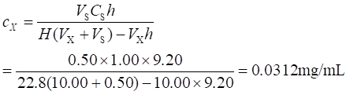
质量分数=0.0312×10－3×50/1.000=1.56×10－3
KNO3溶液 -----支持电解质，消去迁移电流; Na2SO3溶液-------除O2;
动物胶------极大抑制剂，去极大。
45. 5 分 (3599)
由尤考维奇方程：
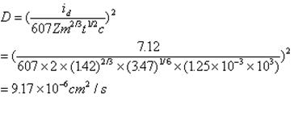
46. 10 分 (3600)
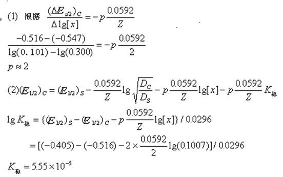
组成为PbX2
47. 5 分 (3601)
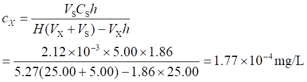
48. 5 分 (3602)
由尤考维奇方程得：
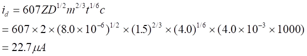
49. 5 分 (3603)
综合波的极谱波方程式：
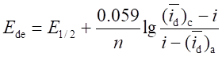
在电极上的反应为：
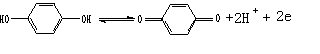
在i=0处滴汞电极的电位为：
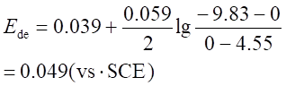
50. 5 分 (3604)
由配离子极谱波的半波电位方程式：
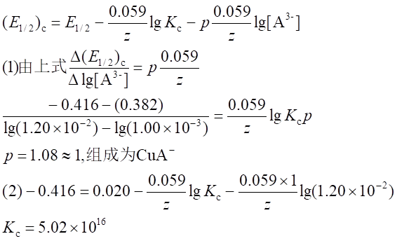
51. 5 分 (3605)
依题意知测量方法为比较法，按（Δip)x：cx=[(Δip)x+s-(Δip)x]：cs
计算出cx
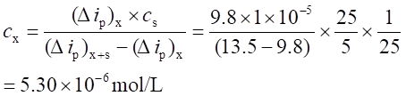
52. 5 分 (3606)
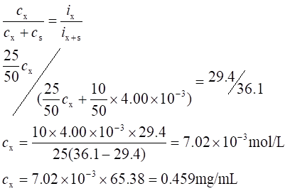
53. 5 分 (3607)
用加入法计算式：
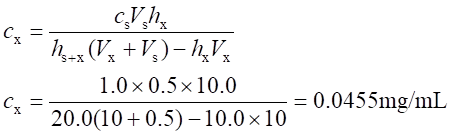
cx×50＝2.27mg
试样中ω(Zn)＝2.27×100/(1.00×103)=0.23%
54. 5 分 (3608)
题中测量的电流是极限电流，用id=ic-ic计算出极限扩散电流，然后计算K（平均）＝id/c
c(Zn2+)/(10-3mol/L) 0.2 0.4 0.6 0.8 1.0 cx
id 6.1 12.3 18.1 24.8 30.2 15.1
K=id/c 30.5 30.8 30.2 31.0 30.2 平均值30.5
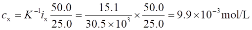
55. 5 分 (3609)
试液中Al3＋的极谱波高＝33.3-10.2=23.1μA
标准溶液中Al3＋的极谱波高＝52.0－33.3=18.7μA
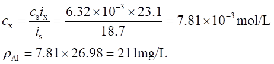
56. 5 分 (3610)
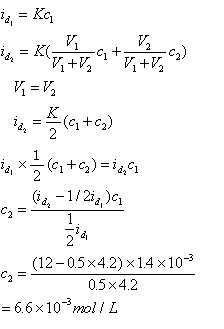
57. 5 分 (3611)
根据Ilkovic方程式：
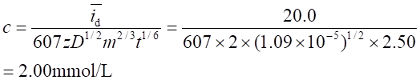
58. 10 分 (3612)
根据Ilkovic扩散电流方程：
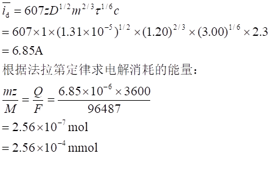
被测离子的原始量为：2.3×10－3×15＝3.45×10－2m mol
浓度降低的百分量为：2.56×10－4×100/（3.45×10－2）＝0.74%
59. 5 分 (3613)
根据Ilkovic扩散电流方程：
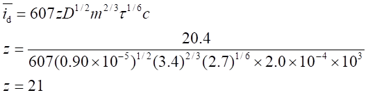
60. 5 分 (3614)
(1)计算反应电子数n：
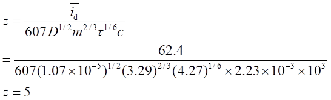
(2)OsO4的电极反应 ：
OsO4+8H++5e-Os3++4H2O
61. 5 分 (3615)
根据Ilkovic扩散电流方程：
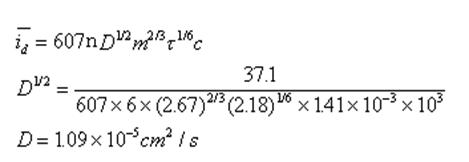
62. 5 分 (3616)
根据Ilkovic扩散电流方程：
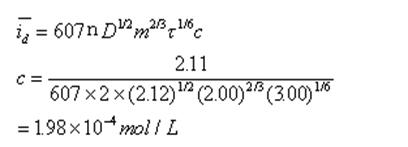
63. 2 分 (3617)
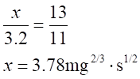
64. 2 分 (3618)
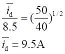
65. 2 分 (3619)
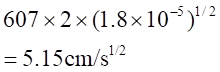
66. 2 分 (3620)
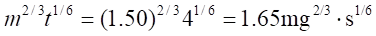
67. 2 分 (3621)
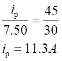
68. 2 分 (3622)
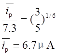
69. 2 分 (3623)
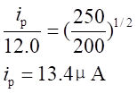
四、问答题 ( 共 80 题)
1. 5 分 (4078)
[答] 由于电解池的正极和负极对被测定离子存在着静电引力，使电解电流增加的那部分电流称为迁移电流，也称非法拉第电流。加入足够浓度的支持电解质，就可以消除迁移电流。
2. 5 分 (4084)
[答] 主要干扰电流有：残余电流，迁移电流，极大现象，氧波等。
消除办法：提纯极谱底液，以减小杂质的法拉第电流。
用仪器补偿电容电流或采用新极谱技术（方波，脉冲极谱），消除电 容电流；加入大量支持电解质可消除迁移电流的影响。
加适量表面活性剂或明胶这类大分子物质可消除极大现象。
通惰性气体 N2、H2等或加还原剂 Vc, Na2SO3等可预先除去溶解 在溶液中的氧，以消除氧波。
3. 5 分 (4085)
[答] 所谓浓差极化就是指由于电极表面与主体溶液之间的浓度差引起的电极电位偏离平衡电位值的现象。这种现象的产生，在电解分析中，会使电解过程产物的质量受到影响。但在极谱分析中，由于完全浓差极化，可使极谱电流只受扩散过程控制，极谱定量分析正是以此为依据的。
4. 5 分 (4086)
[答] 相同点：两种方法同样是在直流电压基础上叠加方形波，并延迟采样时间，以消
除电容电流。
不同点：加方波的频率不同；
方波的持续时间不同；
脉冲法只在每滴汞的后期加一个脉冲电压：（更完全消除电容电流，也
有利于不可逆反应的过程）。
5. 5 分 (4090)
[答] (1) 在无 KNO3存在时测得的该金属离子的极谱还原电流比有 KNO3存在时要大。
因为无 KNO3存在时除扩散电流外还加上电迁移电流。
(2) Cd2+的极谱还原电流亦下降。因为 d∝ hHg1/2 。
(3) Cd2+ 的极谱还原电流增大。可逆波的温度系数为 1.7% /℃，即温度每提高1度,
可逆波极谱电流增加约 1.7% 。
6. 5 分 (4091)
[答] (1) Ti(Ⅳ) 在 H2C2O4- H2SO4 - NaClO3介质中产生的极谱波属于动力
（催化）波，即属平行催化波。其产生的机制可表示成：
Ti(Ⅳ) - HC2O4-+ e-→ Ti(Ⅲ) - HC2O4-�鹊缂�过程
↑_________________________
↓
Ti(Ⅲ) - HC2O4-+ ClO3-�唷� Ti(Ⅳ) - HC2O4-��+ Cl-+ 其他化学反应
(2) 汞柱高度变化对 (1) 中的极谱电流大小无影响。因为催化电流与汞柱高度
无关， ik ∝ m2/3t1/3。
7. 5 分 (4094)
[答]见下图：
直流极谱： 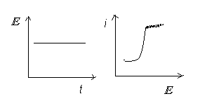
交流极谱： 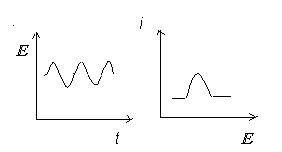
示波极谱： 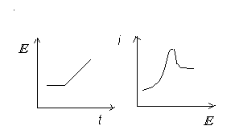
常规脉冲极谱： 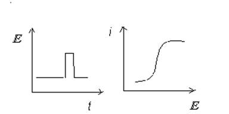
示差脉冲极谱： 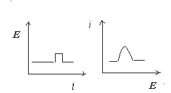
8. 5 分 (4096)
[答] 首先是将被测物质在一定条件下电解富集到一固定的电极（工作电极）上。然后，以等速反向电位扫描，使被富集到电极上的物质重新在电极上氧化（或还原）成离子溶出。
9. 10 分 (4100)
[答] (1) 1. 滴汞电极为负极、阴极；
2. 极化池是电解电池；
3. 电极反应中无 H+参与，E 1/2无明显变化。
(2) 1. 滴汞电极为负极、阳极；
2. 极化池是自发电池；
3. 电极反应中有 OH-参与，E 1/2随 OH-浓度的增加而向负方向变化，即氧
化反应易于进行，反之，则往正方向变化。
10. 5 分 (4101)
[答] 测定铝中微量的铅较易。因为铜的半波电位在铅之前，先还原，大量的铜存在有前波干扰，而铝的半波电位在氢波之后，至少在 -1.0 V 以后，均后于铅还原，故无影响。
11. 5 分 (4102)
[答] 滴汞电极是极化电极，其电位始终随外加电压而变 E de= - E外，根据能斯特方程式 E 1/2= E q+ RT/( z F)×lncs，E de 改变，参加电极反应物质在电极表面附近的浓度 cs 必须随之而改变，以保持能斯特平衡，达到极限扩散电流区域后， cs 更趋近于零。
12. 5 分 (4107)
[答] (1) 如下图：
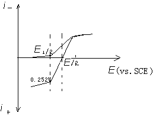
(2) a. 前者为综合波，后者为还原波，但 E1/2不变。
b. 二个极谱波的波高相差一倍。
13. 5 分 (4110)
[答] 第一，特殊在它使用的电极，滴汞电极是极化电极，其电位随外加电压而变化，而参比电极是非极化电极，其电位在电解过程中保持恒定。
第二，电解过程中溶液是静止的，且加入大量惰性电解质以消除迁移电流。
14. 5 分 (4111)
[答] 极谱分析底液包括惰性支持电解质(如 NH3・H2O-NH4Cl)，以消除迁移电流;极大抑制剂（如动物胶）、配合剂，以改善极谱波性质及消除干扰；除氧的试剂，如 Na2SO3等组成。
15. 5 分 (4116)
[答] 电活性物在电极上的电化学反应是进行得相当快的，而它们从溶液本体向电极表面扩散的速率是整个电极过程的决定步骤。当溶液静止，且有大量支持电解质存在时消除了迁电流的情况下，测到的极谱电流是由扩散控制的扩散电流。验证方法有:
1. 作极谱波的对数分析，即 lg (id-i)/i对j画图,直线的斜率为 59/zmV
(25℃)，与理论值相符为扩散电流；
2. 在极谱波上取 E3/4 - E 1/4，其值为 -56/z mV (25℃)，则为扩散电流；
3. 扩散电流的温度系数一般为 1.3%/℃。
16. 5 分 (4118)
[答] 极谱分析中由于滴汞不断在长大，滴汞电极上双电层不断充电而产生的残余电流。称为充电电流。
电活性物质由于电场力的作用迁移到达电极表面而反应产生的电流，称为迁移电流。
17. 5 分 (4117)
[答]极谱分析中，氢离子在滴汞电极上还原称为氢波，由于氢在汞上有很大的超电位，因此还原电位较负。但在缓冲溶液中某些物质能减低氢的超电位，使氢离子在比正常氢波较正的电位上还原出来，这便是氢的催化波，这些物质叫氢催化波的催化剂。在一定范围内，催化电流与催化剂浓度呈正比。
18. 5 分 (4120)
[答] 指示电极的电位反映出电极表面被测溶液的活度，但在测试期间并不引起溶液本体浓度可察觉的变化，如极谱分析中的滴汞电极等。
工作电极则因电解池中有电流通过，使溶液本体浓度发生变化，如恒电流库仑分析中产生滴定剂的电极。
19. 5 分 (4347)
[答] H2Ｏ中大, 有迁移电流的影响。
20. 5 分 (4348)
[答] 优点: 面积小是微电极, 不断更新, 重现性好, 氢有较大的超电位, 很多金属 离子生成汞齐, 故可在氢还原前形成极谱波。
缺点: 汞有毒。
21. 5 分 (4349)
[答] (1)可加入适当的配合剂。
(2)可加入还原剂, 使其事先还原或加入配合剂改变还原电位。
(3)改变溶液的酸度。
22. 5 分 (4350)
[答] 不同点: 极谱法指示电极为滴汞电极, 伏安法指示电极为微电极.
相同点:①溶液组分相同 ②指示电极上均有浓差极化
23. 5 分 (4351)
[答] 单扫描的极化电压变化速度快, 达到分解电压时, 被还原的物质在电极上急速地还原,产生很大电流, 被还原物质在电极表面的浓度急剧降低, 溶液中该物质来不及扩散到表面, 电压变化速度又快, 继续增加电压时, 电流反而减小, 形成峰形。直流极谱为台阶形.
24. 5 分 (4352)
[答] 可通过比较离子性质相近(D相近 ), 且z已知的波, 可在相同浓度下的波高来求得。
25. 5 分 (4353)
[答] 方波信号加上后, 电容电流下降的速度比电解电流的快, 所以在后期测量时, 电解电流的比例较大, 信噪比提高了。
26. 5 分 (4354)
[答] (1)已做过的数据应重做, 因为m, t 改变了；
(2)不要重配, 测定的是浓度；
(3)可以, 每次测定损失很少。
27. 5 分 (4355)
[答] 途径是提高信噪比；
极谱催化波是提高法拉第电解电流；方波、脉冲是在方波电压的后期测量,电容电流已降到较低时,法拉第电流的比重加大了 。
28. 5 分 (4356)
[答] (1)-1.0V,2min是电解, 富集；
(2)静止30s, 是为了让搅拌溶液静止，沉积物在汞内分布均匀；
(3)扫描是阳极溶出, 进行测定；
(4)-0.2V等0.5~1min是进一步溶出, 使电极更干净, 为做下一次准备。
29. 5 分 (4357)
[答] 滴汞各部分由于毛细管遮蔽程度不同, 还原时离子接近难易不同, 各部分还原电流密度不同,汞滴下部, 电流密度较大。
电流密度不同, 表面张力s不同, 表面张力小的向大的方向运动, 进而搅动溶液, 形成极大。
表面活性剂在s大处, 吸附多, s小处吸附少, 消除表面张力的影响, 抑制了极大, 也降低了电流。
30. 5 分 (4358)
[答] 可以观察极谱电流与汞柱高的关系来决定；
极谱电流与汞高h1/2呈正比, 为可逆波；
极谱电流在没有到达极限电流前与汞柱高无关, 到达极限电流后与h1/2呈正比, 为不可逆波；
极谱电流与h无关为动力波。
31. 5 分 (4359)
[答] (1)Cu2+在Ni2+之前还原, 所以包含在Ni2+内,；
(2)扣除Ni2+的极限电流前面的底电流求得。
32. 5 分 (4360)
[答] ⑴ z相同, id相同。
⑵ 将Eq可近似看作简单离子的��E1/2 。前者Sn4+的配合物的E1/2与简单离子E1/2差
值大,故Sn4+的配合能力更强。
33. 5 分 (4361)
[答] KC 为可逆波；
Ke 为不可逆的极谱波；
Kf 为动力波。
34. 5 分 (4362)
[答] 相同点: 两种方法均有双电极或三电极系统电解池, 在电极上均有电化学反应发生, 电流流过电解池。
不同点: (1) 电解分析法力图避免工作电极产生浓差极化。在电解时用大面积工作电极,搅拌和加热电解液。极谱分析法恰恰相反, 是利用工作电极的浓差极化, 在电解条件上使用微电极作工作电极, 静置和恒温电解液, 使工作电极表面产生浓度梯度, 形成浓差极化。
(2) 电解分析法是根据电解物析出量或通过电解池的库仑数来定量。极谱法是根据
id＝ Kc 的关系来定量。
35. 5 分 (4412)
[答] 灵敏度 准确度 分辨率
经典极谱法 10-5mol/L 好 差
交流极谱法 10-5 好 好
单扫描极谱法 10-6 较好 较好
方波极谱法 5×10-8 较好 好
脉冲极谱法 1×10-8 好 好
催化极谱法 10-6 ~ 10-10 较好 差
溶出伏安法 10-8 ~ 10-11 差 较好
36. 5 分 (4413)
[答]交流极谱有以下特点：
(1) 可逆体系的灵敏度与经典极谱相当, 不可逆体系的灵敏度更小；
(2) 由于氧的还原不可逆, 氧的影响小, 在被分析物质浓度较高时可以不除氧.；
(3) 由于极谱图为峰形, 前放电物质的影响比经典极谱法小；
(4) 分辨能力大, 峰电位相差40mV的两种物质的极谱峰可分辨, 而经典极谱法一般 E1/2要相差150mV才可分辨。
37. 5 分 (4414)
[答]可逆过程, 在极谱波上任何电位下 i∝h��
不可逆过程, 在极谱波半波电位下 i∝h0
在极限电流下 i∝h1/2��
吸附过程 i∝h
动力过程 i∝h0
38. 5 分 (4415)
[答]在恒电位下, 电解电流随t�邓ゼ�, 充电电流随exp(-1/RC)衰减,充电电流的衰减速度比电解电流快得多. 依据此原理, 方波极谱仪中, 叠加的方波延时时间t 设计为电解池时间常数的5倍(叠加方波频率为225 Hz), 并在后期采集电流讯号. 这时充电电流已衰减近零, 而电解电流仍有一定数值, 这样就消除了充电电流的影响。
39. 5 分 (4416)
[答]滴汞电极有以下特点:
(1) 表面重现性好；
(2) 汞滴不断更新, 电极表面不会受电解沉积, 吸附等因素的影响；
(3) 随汞滴下滴,带走了电极表面附近的电极过程后的残液, 使下一滴汞不受前 一次电极过程的影响；
(4) 氢在汞上的超电位高, 降低了H+的影响。
40. 5 分 (4417)
[答]单扫描极谱法的灵敏度一般可达10-7mol/L, 比经典极谱法要高两个数量级, 它
灵敏度高的原因有 3 点:
(1) 电压扫描速度快. 在相同浓度下, 单扫描法的峰电流比极限扩散电流大4倍
(1价), 6倍(2价)；
(2) 单扫描法在汞滴末期加扫描电压, 这时电极面积变化小, 充电电流较小；
(3) 极谱曲线为峰形, 与背景易于区别, 可以在噪声较大的情况下正确地测量电流。
41. 5 分 (4418)
[答]是由于汞滴表面张力差异引起的表面切向运动带动电极表面溶液同方向对流, 增 加了还原物质在电极表面的还原量, 使电流异常地增大, 产生了极谱极大, 极谱极大一般用表面活性物质消除。
42. 5 分 (4419)
[答](a)析出电位是物质在阴极上发生连续不断的电解反应时最正的阴极电位, 半波 电位是极谱波高一半所对应的滴汞电极电位.前者与物质浓度有关, 后者与物质浓度无关.
(b)极限电流是在极谱波平台某一电位下的极谱电流, 它包含极谱扩散电流和残 余电流, 是两者之和. 极谱扩散电流与物质浓度呈正比, 极限电流无此关系.
43. 5 分 (4420)
[答]在汞滴下落时, 由于反作用力使汞向毛细管内收缩, 溶液吸入毛细管内, 这种运动有不规则性. 当汞再向毛细管流出时, 在吸入溶液部分的毛细管壁上残留了一薄层溶液, 使整个体系的电解电流与电容电流也发生不规则的变化. 它以噪声的形式显示出来,称为毛细管噪声. 毛细管噪声电流的衰减比较慢,但它仍比电解电流衰减快得多, 因此, 可以采用延时的方法使毛细管噪声电流充分衰减.在脉冲极谱法中脉冲延时60ms以上, 在后期记录电流讯号即可消除毛细管噪声电流.
44. 5 分 (4524)
[答] iPa 、iPc、 EPa、 EPc��; iPa /i Pc =1, DEp=0.058/z(V),
Eq'=[EPa +EPc ]/2. 它们主要可用来判断该电极过程的可逆性。
45. 5 分 (4667)
溶出伏安法根据工作电极发生氧化反应还是还原反应，可以分为阳极溶出伏安法和 阴溶出伏安法两种。溶出伏安法灵敏度比相应的极谱法灵敏度高，主要是溶出伏安法是 分两步进行的，因为第一步进行了被测物质的富集,第二步很快地溶出，因为 i富t富≈i溶t溶 ， 而 t富>>t溶 ， 则i溶>>i富 所以它的灵敏度高。
46. 5 分 (4668)
因在电解质中含有氧 ，O2在滴汞电极上分二步还原而产生两个极谱波：
第一个波： O2＋2H＋＋2e-H2O2
第二个波： H2O2＋2H＋＋2e-2H2O
这两个还原波的覆盖的电位范围较宽，约为－0.2～－0.9（vs SCE），干扰大多数金属离子的测定，所以应预先除去。通常除O2的方法可以通纯净N2，在碱性或中性试液中也可以加入少量无水Na2SO3。
47. 5 分 (4669)
示差脉冲极谱法灵敏度高，主要在于它使充电电流和毛细管噪声电流充分衰减，在 采集信号时噪声很小，提高了信/噪比。
48. 5 分 (4670)
在循环伏安图上可以测得氧化还原峰电流和氧化还原峰电位四个重要参数：ipa, ipc , Epa , Epc。若ipa/ipc＝1或DEp = 56/ z mV，则该电极反应为可逆反应。 利用jpa , jpc，可以求得条件电位jq¢＝(jpa + jpc )/ 2。
49. 5 分 (4687)
双指示电极电流滴定法是以溶液中存在的可逆电对离子在两支电极上反应流进电解 池的电流变化来确定滴定终点的。Ce4＋滴定Fe2＋的滴定曲线有 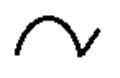
滴定前：溶液中只有Fe2＋，无可逆电对存在，流进电解池的电流为残余电流。
滴定中：加入Ce 4＋后，Fe2＋被氧化为Fe3＋，溶液中出现Fe3＋/Fe2＋电对，随滴
定过程Fe3＋浓度逐渐增大，c (Fe3＋)/c(Fe2＋)增大，电流增大，到c (Fe3＋)/ c (Fe2＋)等于1时（滴定至50％），电流达极值，继续滴定时，由于Fe 2＋逐渐减小，通过电解池的电流也随之减小，到终点时电流减小至残余电流。终点后：出现Ce4＋/Ce3＋电对，随Ce 4＋加入，电流逐渐增大。
50. 5 分 (4688)
电流滴定是在恒电位条件下用滴定剂来滴定被测溶液，，测量滴定过程中电流的变 化来确定滴定终点的方法。例如用标准SO42－溶液滴定Pb 2＋溶液，在电解池上加0.8V的电压，此时Pb2＋在电极上还原，电流为极限扩散电流。当加入SO42－时，由于形成PbSO4沉淀，使电流降低，随滴定过程电流逐渐减小，滴定终点时电流降至残余电流。用电流与滴定剂体积作图得到形滴定曲线，曲线转折点即为滴定终点。
51. 5 分 (4689)
溶出伏安法分析过程包括三个阶段，即预电解、静置、溶出。预电解阶段是使被电解物质通过电解富集于悬汞电极（或其它微电极）上，电解在搅拌下进行。电解结束后停止搅拌，使电解液静止和进入汞中的物质扩散均匀，这是静置阶段。第三阶段是利用各种电压扫描方式（线性扫描，脉冲，方波等）进行电压扫描，在达到被分析物的氧化电位时发生氧化电极反应（这时工作电极为阳极），同时记录伏安图，伏安图具有峰形，峰电流与被测物质浓度呈正比。由于溶出过程中工作电极为阳极，因此称为阳极溶出伏安法。
52. 5 分 (4690)
平行催化极谱法是一种动力学方法，它是利用伴随电极反应的化学反应使电极反应 物再生，从而使信号强度增大，提高信噪比的方法，其电极过程可表示为：
O＋ne-R
R＋ZO
催化极谱的灵敏度比常规直流极谱法高得多，检出限一般比后者低2－3个数量级。
53. 5 分 (4691)
（1）灵敏度高。由于消除了充电电流和毛细管噪声电流，方法的检出限可低至
1×18－8 mol/L。
（2）分辨率好。两相邻物质的峰电位相差45mV左右即可分辨和准确测定峰高。
（3）抗相邻还原物的干扰好。前还原物质的浓度大于5000倍时，仍可经补偿后 准确测定分析物质的峰高。
（4）对不可逆电极反应物质也有较高的灵敏度。可用于测定许多有机物质。
（5）可用低浓度支持电解质，有利于降低残余电流干扰。
54. 5 分 (4692)
（1）示差脉冲极谱与常规脉冲极谱扫描电压方式不同。常规脉冲法加的是等增幅 脉冲，而示差脉冲法是在线性扫描电压上叠加等幅脉冲。
（2）信号采集方式不同。常规法只有脉冲后期采集信号，而示差法是在加脉冲前 和脉冲后期各采集信号。极谱图为阶梯形。以其差值为测量信号，极谱图为 峰形。
（3）灵敏度、分辨率不同。示差法比常规法在这方面都好。
（4）都是在汞滴寿命后期加一次脉冲。
55. 10 分 (4693)
当使用循环伏安法研究电极过程发现循环伏安图上有以下现象可判断电极表面对物 质的吸附：
（1）对可逆电极反应若发现第二次三角波扫描获得的循环伏安图上峰电流有显著 的增加可判断有弱吸附伴随电极过程，阴极电流增加表示反应物有吸附；阳 极电流增加表示反应产物有吸附。
（2）在循环伏安图上若出现前峰或后峰表示有强吸附伴随电极过程。出现吸附前 峰表示反应物强吸附；出现吸附后峰表示电极反应产物有强吸附。
56. 5 分 (4694)
单扫描极谱法是在滴汞电极汞滴寿命期内施加一个锯齿形电压于电解池上，汞滴寿 命为7秒，其中前5秒为休止期，在此期间电解池上加有预置电压，后两秒为电压扫描期，其电压扫描速率为250mV・s－1，在此期间滴汞电极电位呈线性变化。在扫描过程中，被分析的物质在滴汞电极上发生电极反应，极谱图用示波器记录。
极谱图为峰形，峰电流与被分析物质的浓度呈正比，峰电位与半波电位有以下关系：
Ep=E1/2 + RT/zF
由于极谱图是在一个汞滴上完成，因此称单扫描极谱法。
57. 5 分 (4695)
单扫描极谱法比直流极谱法信噪比高的主要原因有：
（1）单扫描极谱法是在汞滴寿命最后两秒加扫描电压，这时滴汞电极面积随时间的 变化很小，充电电流较小，因此在此期间的信噪比较大，再经示波器Y轴放大， 因此可测量比直流法更低的电解电流。
（2）单扫描极谱法的峰电流ip∝z3/2、υ1/2，且Randles－Sevcik程比Ilkovic方程的数值常数约大3倍，因此在相同的浓度下单扫描极谱法的峰电流比直流极谱法的极限扩散电流大。
58. 5 分 (4696)
循环伏安法是研究电极过程动力学的一种重要的方法，它可用于：
（1）判断电极过程的可逆性；
（2）研究电极上反应产物的吸附；
（3）研究电极反应历程；
（4）电极反应与电极表面的化学反应耦联的反应过程的研究。
59. 5 分 (4697)
（1）灵敏度较高，检出限可至10－7 mol/L，比直流极谱法高两个数量级
（2）分辨率较好，两相邻还原物质的峰电位相差70～100 mV即可分别准确测量
峰高
（3）对紧挨的后还原物质抗干扰能力较直流极谱法好
（4）记录速度快，每一试样测量仅需几十秒
（5）氧的干扰较小，氧还原可逆较差，干扰电流很小
（6）对可逆性差的物质，灵敏度较低，对表面活性物质敏感，有时会影响峰电流
60. 5 分 (4698)
极谱分析法除应用于无机物分析外，对有机物分析也非常有用。原则上含有共轭不 饱和结构、羰基、偶氮、硝基、亚硝基、硫基、二硫基等化合物在滴汞电极上均能发生氧化－还原电极反应，因此，这些有机物都能在水溶液或非水溶液中进行极谱分析测定。有机物的电极反应大多数有氢离子参加反应，测定时溶液的pH值有较大的影响，因此，有机物的极谱分析大多在缓冲体系中进行。
61. 5 分 (4699)
极谱分析常用的定量分析方法有三种：（1）比较法：用一个标准与试样进行极限扩散电流比较，进行定量，这种方法一般在试样较少，且试样成份不复杂时使用。（2）标准曲线法：在相同条件下配制标准系列，制作 －C较正曲线，用较正曲线对试样定量。这种方法一般在试样较多时使用，各试样的量应在较正曲线直线范围内。（3）标准加入法：在试样较少，试样成分较复杂时使用。
62. 5 分 (4700)
若用内标法进行极谱分析时，内标离子应满足以下条件：
（1）两者半波电位不宜相差太大，以相差200毫伏为宜
（2）两者电极反应电子数相等
（3）两者在溶液中的扩散系数相近
63. 5 分 (4701)
Ilkovic扩散电流方程式为id＝708zD1/2m2/3t1/6 c，从此方程式看出在其它参数一 定的条件下，id∝c；id∝708zD1/2（扩散电流常数）；id∝m2/3t1/6（或汞柱高度h1/2）。此外，扩散电流还与温度有关。因此在作系列极谱分析时，应注意汞柱高度及温度的变化对扩散电流测定的影响。
64. 5 分 (4702)
利用以下滴汞电极电位方程式：
Ed,e ＝E’ + 0.059/z ・lg[(id-i)/i] （25℃）
用Ed,e对lg[(id-i)/i] 作图由直线的斜率即可测定得到可逆电极反应的反应电子数。
65. 5 分 (4703)
配制一系列含有不同浓度配位体X的溶液，测定各溶液所作极谱图的半波电位，按 下列半波电位方程式：
(E1/2)c=(E1/2)s-(0.059/z) ・ lgK稳 -0.059p/z・ lg[X] （25℃）
作(E1/2)c对 lg[X] 图，由直线斜率即可求得配位数p，由此进一步可计算出K稳。其中(E1/2)c为离子配合物的极谱波的半波电位，(E1/2)s为金属离子的极谱波的半波电位。
66. 5 分 (4704)
从题中电极反应可以看到影响极谱波半波电位的主要因素为：
（1）测试溶液的氢离子浓度；
（2）配位体浓度；
当pH增大和配位体R的浓度增大时，半波电位均向负移动。
67. 5 分 (4705)
线性扫描极谱法中极谱电流与电极表面扩散层同的浓度梯度呈正比，i∝(c0-cS)/δ 。直流极谱法电压扫描速率很慢，约5 mV・S－1，在汞滴寿命期内电极表面易建立扩散平衡，扩散层厚度δ为定值 ，当电位变负，cS逐渐变小，最后cS →0时，电流只与c0/δ有关，因此极谱图出现平台为阶梯形。单扫描极谱法电压扫描速率很快，为250mV・s－1，在上述相同情况下，由于电流迅速增大，δ也随时间迅速增厚，使电流下降，出现峰形极谱图。
68. 10 分 (4706)
电极表面有双电层结构，当外部向双电层充电时即有充电电流（或称电容电流）流 过电极。设有饱和甘汞电极（SCE）、滴汞电极（DE）及0.1mol・L－1KCl 组成的电池，在电极开路时SCE比DE电极电位约＋0.5V，在电极短路时，即通过外电路由SCE向DE方向流过电流，这时汞滴表面带正电荷，流过的电流为正电流。若汞滴表面为恒定的，这个电流瞬间流逝。但滴汞电极面积是周而复始地变化，因此此充电电流亦随电极面积的变化而变化。当电解池加上外电压时，随外电压增大，正充电电流逐渐减小，最后减小至零，此时滴汞电极电位称毛细管零电荷电位。当外加电压继续增大时，滴汞电极表面带负电荷，流进的电流即为负充电电流。因此在滴汞电极上流过的充电电流有正有负。
69. 5 分 (4707)
在不加支持电解质时对Cd2＋分析产生的影响比对硝基苯分析产生的影响大。因为 阳离子受电场的影响比溶液中的有机分子硝基苯强烈 ，产生的迁移电流较后者大，故影响大。
70. 5 分 (4708)
氧在滴汞电极上发生两阶段共四个电子的还原反应，在极谱图上出现两个极谱波， 对极谱测定产生以下干扰：
（1）电流干扰：氧的还原电流叠加在相同电位下还原的被分析物还原电流上，不 能区分；
（2）波形干扰：当被分析物在另外波形下还原时，由于氧的极谱第二波为不可逆 波，使被分析物的极谱波平台不平，造成测量波高困难。
因此，必须在分析前除去溶液中的溶解氧。
71. 5 分 (4709)
极谱分析中通用的除氧方法是向电解池中通入惰性气体，例如N2，使电解液中的溶 解氧由于液面上氧的分压降低而脱除氧。另外，在电解液为碱性时可以加入无水Na2SO3除氧。
72. 5 分 (4710)
（1）NH3－NH4Cl ：支持电解质，用于消除被测离子的迁移电流；
（2）Na2SO3：还原剂，用于消除溶液中的溶解氧；
（3）动物胶：表面活性剂，用于消除滴汞电极表面各处电荷密度差异产生的极谱 极大。
73. 5 分 (4711)
当在滴汞电极上还原的物质为阳离子时，加入支持电解质后还原电流由于消除了迁 移电流，电流值减小；当在滴汞电极上还原的物质是阴离子时，由于它的扩散方向（向滴汞电极表面）与迁移方向（向对电极方向）相反，因而加入支持电解质后还原电流将增加。
74. 5 分 (4712)
在极谱分析领域内可采用的分离方式有两种：（1）改变支持电解质：因为相同的离子在不同的支持电解质中有不同的半波电位，选择恰当的支持电解质将使两者分开；（2）若其中一种可形成配离子，可加入浓度较高的配离子，两者即可分离测定。
75. 10 分 (4713)
（1）电位分析法是在通过电解池的电流为零的条件下测定电池的电动势，因此指 示电极表面无浓差极化；
（2）电解分析法通过电解池的电流很大，工作电极表面有浓差极化，为降低浓差 极化的影响，电解时一般都强烈地搅拌电解液；
（3）极谱分析是利用指示电极（滴汞电极）表面的浓差极化，因此电解时要防止 对流、温差等外因破坏电极表面的浓差极化。一般不搅拌溶液，电极面积也 较小。
76. 5 分 (4714)
（1）灵敏度低：仅能测定浓度为10－5mol・L－1的物质；
（2）分辨率较差：两种离子的半波电位应相差200mV才能分别对两极谱波高测量；
（3）抗相邻后还原物质干扰小，后还原物质的浓度超过前还原物质10倍，前还原
物质的极谱波高即不能准确测量；
（4）记录速度慢：记一次完整的极谱波需要3～4min。
77. 5 分 (4715)
电解池上外加电压与各电极电位的关系可以用下式表示：U＝E参－E滴＋iR，由于极谱电解池通过的电流是微安级，电池内阻仅几百欧，第三项可略去。因滴汞电极电位以E参为对照，故U＝－E滴，滴汞电极电位即可表示为－U（对E参），例如，－0.06V（对SCE）。
78. 5 分 (4716)
（1）双电极电解池由滴汞电极和大面积汞池电极或大面积甘汞电极组成。滴汞电
极是指示电极，大面积汞池电极或大面积甘汞电极是参比电极。为防止该电
极极化，电极面积较大。
（2）三电极电解池由滴汞电极（指示电极）、参比电极、铂对极组成。电解池电
流仅从滴汞电极－对电极之间流过，不流过参比电极，滴汞电极电位相对于
参比电极测定。
79. 5 分 (4717)
（1）双电极电解池由滴汞电极和大面积汞池电极或大面积甘汞电极组成。滴汞电 极是指示电极，大面积汞池电极或大面积甘汞电极是参比电极。为防止该电极极化，电极面积较大。
（2）三电极电解池由滴汞电极（指示电极）、参比电极、铂对极组成。电解池电 流仅从滴汞电极－对电极之间流过，不流过参比电极，滴汞电极电位相对于参比电极测定。
80. 5 分 (2468)
[答] Ilkovic方程式 id＝607zD1/2m2/3��t1/6��
或 id＝K m2/3��t1/6��c, K＝607zD1/2
因 m∝h t∝1／h
将此关系式代入Ilkovic方程式
id＝K'h2/3(1／h)1/6 c＝K'h1/2c